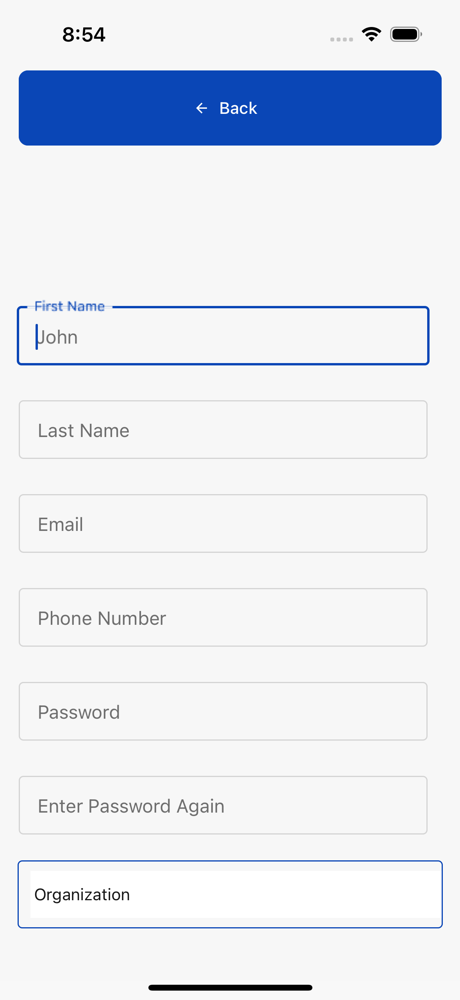
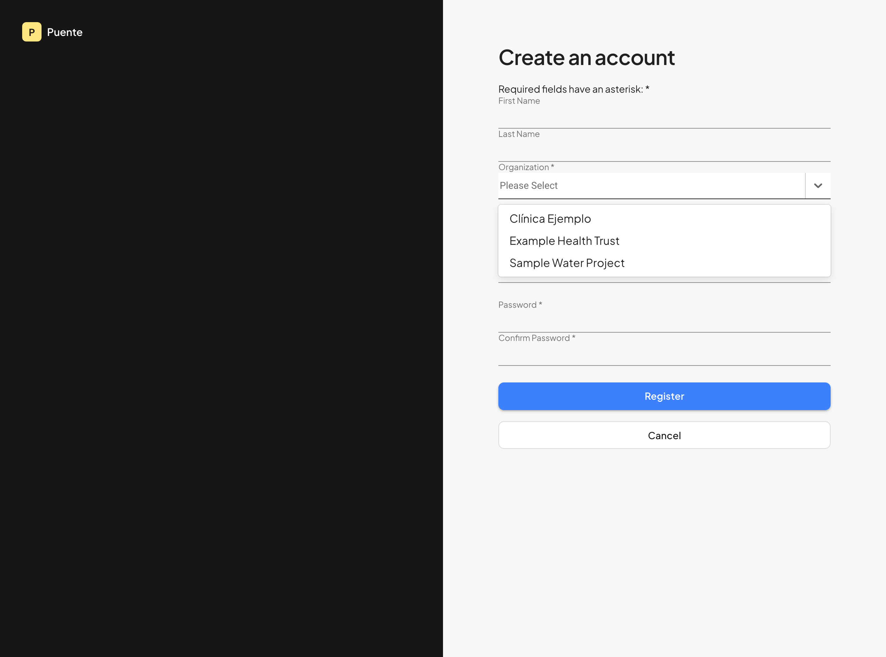
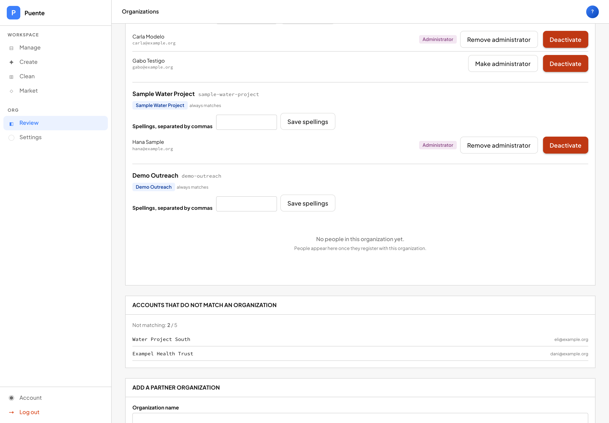
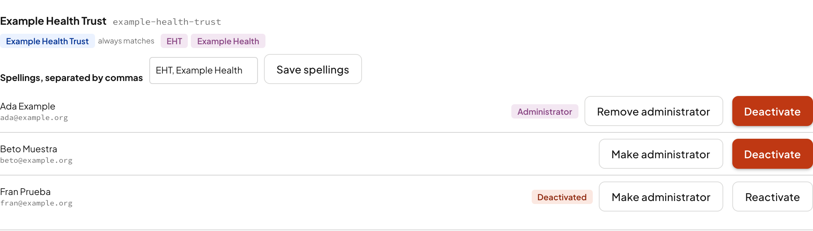
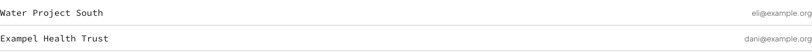
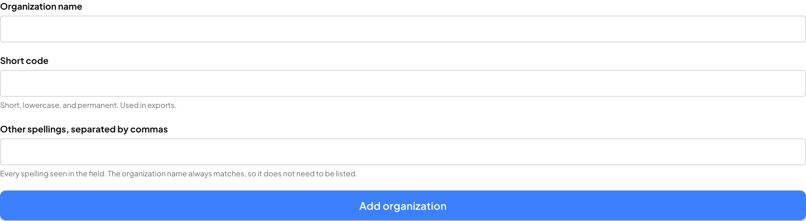

1The idea
An organization is the name on the folder that holds a group's survey records and their team's accounts. Your organization decides which records you can see.
That is the whole concept. Everything on this page follows from it.
If your account belongs to a clinic, you see that clinic's records. If it belongs to a water project, you see theirs. One group's data is never visible to another.
Puente has two apps and the organization means the same thing in both: Collect, the phone app field teams use to record surveys, and Manage, the web app where that work is reviewed and exported.
2Why this is harder than it looks
Here is the entire problem. Picture several people typing the name of the same organization:
To a person these are obviously the same group. To a computer they are six different groups — and that is exactly how a partner ends up appearing to have done almost no work, while hundreds of their records sit filed under an abbreviation nobody thought to look for.
So Puente keeps one official record per organization, plus a list of nicknames it also answers to. Capital letters, accents and stray spaces are ignored when matching. Nicknames are covered in section 6, and they are the most useful thing on this page.
3How an organization is created
There are two doors in, and which one you use depends on which app you are in.
Door 1 — someone signs up on the phone (Collect)
This is the self-service door. On the phone, the organization field is a type-and-suggest box: you start typing and it offers matches.



Two things can happen from here:
- You pick a suggestion. You join that existing organization.
- You type a name that does not exist yet. Puente creates a new organization and you become its administrator.
That second case is what lets a new partner start working without waiting for anyone. It also means a typo could create a duplicate of a group that already exists — which is what the check below is for.
The check that prevents duplicates
Before creating anything, Puente asks whether the name you typed is suspiciously close to one that already exists.
| You type | Already on file | Result | Why |
|---|---|---|---|
Example Health Trust | Example Health Trust |
Joins it | Exact match. Nothing new is created. |
Exampel Health Trust | Example Health Trust |
Refused | One letter out. Almost certainly a typo. |
Example Health Trust North | Example Health Trust |
Refused | One name contains the other. |
Clínica San Rafael | nothing similar | Created | Clearly a different organization. |
When a name is refused, the person still gets their account. They are placed in a waiting list and Puente staff are asked to sort it out. This is deliberate:
A field worker who cannot register is a problem today, in the field. An organization name that needs tidying up is a problem for the office, later.
Door 2 — Puente staff create it in Manage
On the web the organization field is a fixed list. You choose from it; you cannot invent a new name here.

If your organization genuinely is not there, a link tells you what to do rather than letting you guess:

never pick an organization that is nearly right. It is not a label on your account; it decides whose records you can see and where your team's work is filed.
4Who becomes an administrator
Whoever registers gets one of two starting positions.
| Situation | They become | Can they work straight away? |
|---|---|---|
| First person in a brand-new organization | Administrator | Yes |
| First person in an organization staff had already created | Administrator | Yes |
| Anyone joining an organization that already has members | Contributor, pending approval | Yes |
Nobody is locked out while waiting. Approval governs what someone can administer, not whether they can do their job.
5Managing an organization
Manage has a dedicated Organizations screen. You can reach it if you are either Puente staff, who can see every organization, or an administrator of your own organization, who sees only theirs. Anyone else is sent back to the dashboard.

Each organization, and its people

From a person's row you can:
- Make administrator — or remove that.
- Deactivate — for someone who has left. This also signs them out of the phone app, rather than leaving them able to keep syncing.
Two guard rails you will meet, both on purpose:
- You cannot remove the last administrator of an organization. That would lock the group out of its own data. Appoint a replacement first.
- You can only manage your own organization's people. An administrator at one partner cannot reach into another's.
The accounts that did not match
This is the working list. Each row is a real person who signed up with a name Puente could not match to any organization.

The list always shows a total beside it — "2 of 5" rather than a bare "2" — so a short list can never be mistaken for a clean one.
Creating an organization

Puente refuses a name or nickname that is already taken by another organization, and names the one that has it, so two groups can never end up claiming the same spelling.
6Nicknames
Every organization has one official name and a list of nicknames — other
spellings it also answers to. If the official name is Example Health Trust and
you add EHT as a nickname, every record and account filed under
EHT stops being lost.
Worth knowing:
- The official name is always a nickname too. You never need to add it.
- Capitals, accents and stray spaces do not matter.
Clínica,clinicaandClinicaare treated as the same word. - A nickname belongs to only one organization. If you try to claim one another group already uses, Puente refuses and tells you which group has it. Two groups claiming one name would make it impossible to say whose records are whose.
Adding a nickname is the single most useful repair available. It can return hundreds of apparently missing records to their rightful owner in one edit, and it changes nothing about the records themselves.
7Retiring and merging
Organizations are not deleted. Deleting one would destroy the record of who collected what. Instead there is an active-or-retired setting.
Retiring an organization means "stop offering this when people sign up." It does not mean the organization never existed: its past records still belong to it and still appear correctly. Retiring also releases its names, so another organization can take them over — which is how a merge works:
To merge B into A: retire B, then add B's name as a nickname of A. B's records now find their way to A, and B's own entry stays on file so you can still see where they came from.
retire, do not delete. Retiring is reversible and keeps the history. Deleting an entry throws away the provenance of every record collected under it, and cannot be undone.
8Quick answers
| Question | Answer |
|---|---|
| I signed up and the app looks empty. | Your organization name probably did not match anything, so you are on the waiting list. Ask an administrator to check it. |
| Can I move myself to another organization? | No. It decides which records you can see, so it is a staff action. Ask Puente. |
| My organization is not in the list on the web. | Use the "My organization isn't listed" link. Do not pick a close match. |
| Someone has left the team. | Deactivate them on the Organizations screen. That also signs them out of the phone app. |
| We are two organizations that should be one. | Retire one and add its name as a nickname of the other. Ask Puente staff. |
| Why was my new organization name refused? | It was too close to one already on file. Staff will confirm whether you are a genuinely separate group. |
| Our team writes the name three different ways. | Add all three as nicknames. That is what they are for. |